Je hebt nog geen data ingeladen.
Verbind met WiFi en druk op
om je samengestelde reis in deze app te laden.
Thailand
16 nachten
Bangkok
Chiang Mai
Pattaya
Phuket
Ko Samui
Krabi Town
Ayutthaya
Pai

BANGKOK
4 nachten
MIJN ACTIVITEITEN
WAT TRAIMIT
2 uur
40
8 AM - 10 PM
TEMPELS
Een van de grootste Buddha's ter wereld, een 3 meter hoge en 5.5 ton zware Buddha die helemaal goud glanst.
Th Mitthaphap
Ferry of Metro
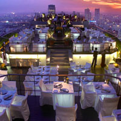
MOON BAR
2 uur
GEEN
2 PM - 1 AM
UITZICHT
Een bar bovenop de 61ste verdieping van de Banyan Tree Hotel, hier krijg je het mooiste uitzicht over de stad.
21/100 Th Sathon
Metro
Dusit Palace Park
4 uur
100
10 AM - 10 PM
Historie
Rama V's eerste bezoek aan Europa in 1897 (hij was de eerste Thaise koning die dit continent bezocht) leide tot dit paleis dat hij heeft laten bouwen aan de hand van de dingen die hij had gezien in Europa.
Th Ratchawithi, Th U Thong Nai
Subway of Ferry
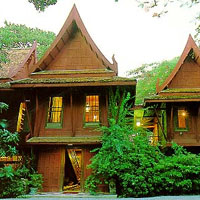
JIM THOMPSON HOUSE
2 uur
100
8 AM - 10 PM
Historie
Bekijk het huis van deze ondernemer en kunst verzamelaar die tijdens de WWII werkte voor the Office of Strategic Services in Thailand (de voorloper van de CIA)
Soi Kasem San 2
Subway of Ferry
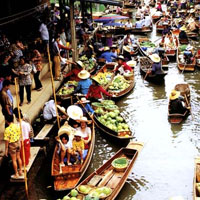
Floating Markets of Damnoen Saduak Cruise
6 uur
1400
12 AM - 8 PM
Water
Vaar door de oude grachten van Bangkok en kom langs verschillende drijvende marktjes waar men veelal fruit en lekkernijen verkoopt.
Ophalen en terug brengen
Jou verblijfplaats
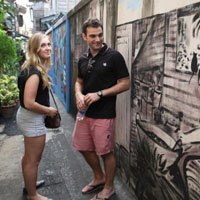
Bangkok Walking Adventures
8 uur
va. 1000
8 AM - 8 PM
Actief
Een hele dag wandelen door het prachtige Bangkok, begeleid door een gids die je naar de mooise en onbekende plekjes van Bangkok brengt.
646 Charoenkrung Road
Tuk Tuk
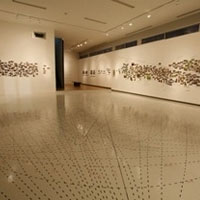
Ardel Gallery of Modern Art
4 uur
GEEN
8 AM - 10 PM
Kunst & Cultuur
Ookal ligt het ver van het centrum af, Ardel behoort tot een van de bekendste gallerijen van Bangkok.
Th Boromaratchatchonanee 18
Tram
Naar stad selectie
CHIANG MAI
3 nachten
MIJN ACTIVITEITEN
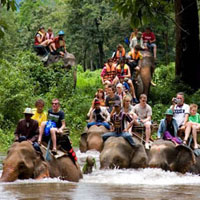
Elephant Trek, Rafting and Hilltribe Village Tour
9 uur
3280
8 AM - 10 PM
Actief
Loop door de jungle van Chiang Mai, rijd een stukje op een olifant en raft over de ping rivier.
Ophalen en terug brengen
Jou verblijfplaats
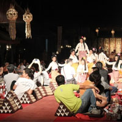
Traditional Khantoke Dinner and Show
3 uur
va. 920
4 PM - 1 AM
Lokaal eten
Geniet van je Thaise dinner geserveerd in kleine kommetjes op een lage tafel, ondertussen kijk je naar verschillende lokalen uitvoeringen tijdens de show.
Ophalen en terug brengen
Jou verblijfplaats
Wat Chedi Luang
2 uur
GEEN
8 AM - 10 PM
Kunst & Cultuur
Vroeger het langste bouwwerk in de provincie Chiang Mai, gebouwt in het jaar 1441. Dit oude bouwwerk is in 1775 flink beschadigd geweest door een aardbeving of kanonsschoten. Deze tempel werdt vaak gebruikt door monikken om te mediteren.
Th Phra Pokklao
Tuk Tuk
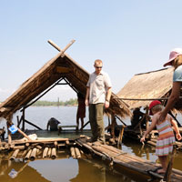
Huay Teung Thao Reservoir
4 uur
20
10 AM - 10 PM
Ontspanning
Relax bij deze water reservoirs in een van de drijvende bamboe hutjes en probeer een aantal van Thailands versnaperingen.
-
Metro of Subway
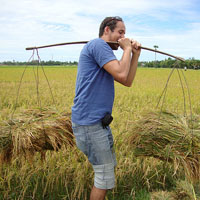
Live Like a Local: Rice Farmer for a Day
8.5 uur
1320
8 AM - 6 PM
Historie
Ga een dag door het leven als een rijst teler, ervaar het werken op een groot rijst veld, ruil je kleren om voor traditionele boeren kleding en leer over het proces van het verbouwen van rijst.
Ophalen en terug brengen
Jou verblijfplaats
Naar stad selectie
PATTAYA
1 nacht
MIJN ACTIVITEITEN
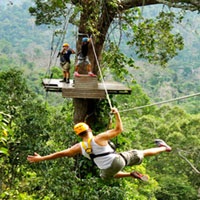
Flight of the Gibbon
7 uur
3000
10 AM - 8 PM
actief
Survival een route van 3 km waar je op 26 platformen door de open safari van Khao Keeo heen swiert. Naast deze survival route kun je een bezoekje brengen aan de naast liggende dierentuin en kun je nog een obstakel route lopen.
Khao Keeo Safari
Taxi
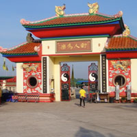
ANEK KUSALA SALA
3 uur
~50
10 AM - 10 PM
Kunst & Cultuur
Dit museum is ooit gebouwd als vriendschaps bouwwerk tussen Thailand en China. Vandaar dat je er ook veel Chinese kunstwerken kunt bewonderen.
Th Sukhumvit
Tuk Tuk
Mermaids Scuba Diving
7 uur
va. 1000
8 AM - 7 PM
Water (sport)
Neem een kijkje onder water en bewonder de mooiste plekken rondom Pattaya, snorkel wat rond of ga diep zee duiken.
Soi White House
Tuk Tuk
Naar stad selectie
PHUKET
2 nachten
MIJN ACTIVITEITEN
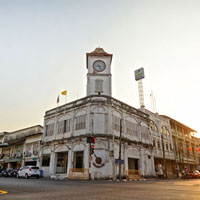
Introduction City Sightseeing Tour
5 uur
~300
8 AM - 10 PM
Actief
Krijg een mooie indruk van de stranden van Phuket, bezoek aan plaatsen met een prachtig uitzicht. Rijd daarna door Phuket town waar je verschillende Sino-Portugese architectuur vind.
Ophalen en terug brengen
Jou verblijfplaats
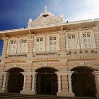
Thaihua Museum
4 uur
200
10 AM - 10 PM
Kunst & Cultuur
Dit museum wat eerst een school voor de chinese taal was laat de geschiedenis van Phuket zien.
28 Th Krabi
Tuk Tuk
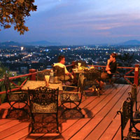
Khao Rang
4 uur
GEEN
0 AM - 12 PM
ACTIEF
Beklim de Khao Rang voor een adembenemend uitzicht, voor de echte wandel liefhebbers is deze berg te beklimmen, maar een ritje met de taxi is ook mogelijk.
Phuket Hill
Lopen
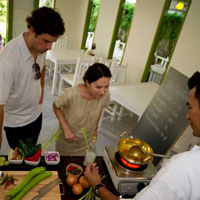
Suay Cooking School
3.5 uur
1800
8 AM - 10 PM
Lokaal eten
Leer Thais koken van een van de beste koks van Phuket. Hij laat je op de lokale markt zien hoe je een heerlijk 3 gangen diner bereidt. Geniet daarna onder het genot van een wijntje van het diner.
50/2 Th Takuapa
Tuk Tuk
Naar stad selectie
KO SAMUI
2 nachten
MIJN ACTIVITEITEN
Nam Tok Na Muang
4 uur
GEEN
0 AM - 12 PM
ACTIEF
Deze 30 meter lange waterval is de langste van dit eiland en kets op verschillende paarse rotsen daarnaast is er een mogelijk om te zwemmen.
Nam Tok Na Muang
Taxi
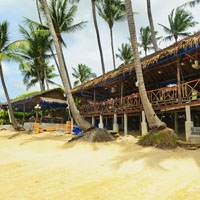
Ban Hua Thanon
4 uur
GEEN
8 AM - 12 PM
Actief
Bekijk een heus islamitisch dorpje in Thailand, naast het boeddhisme houden zij zich ook aan het islamitische geloof. De oude houte huizen die zo'n 50 tot 60 jaar oud zijn hebben een antieke uitstraling. Bezoek verder de plaatselijke moskee en loop over de lokale markt.
Ring Rd
Taxi
Bo Phut
3 uur
GEEN
8 AM - 10 PM
Lokale bevolking
Een vissermans dorpje met kleine chinese winkelhuisjes die zijn getransformeerd in trendy resorts en hotels.
Bo Phut
Taxi
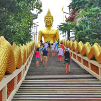
Wat Phra Yai
2 uur
GEEN
8 AM - 10 PM
Kunst & Cultuur
Helemaal in het noorden van Samui vind je een 15 meter hoge moderne buddham, daarnaast ligt er de nieuwe tempel Wat Plai Laem waar een enorme buddha met 18 armen staat.
-
Taxi
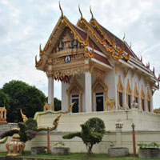
Wat Khunaram
3 uur
GEEN
8 AM - 10 PM
Historie
Sommige tempels hebben de overblijfselen van monniken, in Wat Khunaram zijn de overblijfselen van monnik Luang Phaw Daeng te bewonderen die nog in een kleermakers zit en een zonnebril draagt.
Th Ban Thurian
Tuk Tuk
Naar stad selectie
KRABI TOWN
2 nachten
MIJN ACTIVITEITEN
Phang Nga Bay Tour
8 uur
3200
7 AM - 10 PM
Water (sport)
Deze tour leidt je naar de mooiste plekken rondom Krabi Town, waar je langs prachtige witte stranden komt, verschillende koraal riffen kunt bewonderen, waar je langs kleine eilandjes komt die als een naald in de zee steken en kom je langs interessante archeologische overblijfselen.
Ophalen en terug brengen
Jou verblijfplaats
Krabi Hot Stream and Rainforest Tour
8 uur
2350
7 AM - 10 PM
ACTIEF
Ga het regenwoud in en bewonder de mooie natuur, zwem in een natuurlijk zwembad en kom langs oude palmolie en rubber plantages waar nog altijd hete stoom vandaan komt.
Ophalen en terug brengen
Jou verblijfplaats
Rock Climbing at Railay Beach
5 uur
va. 1400
7 AM - 8 PM
ACTIEF
Leer in 3.5 uur hoe je kunt rotswand klimmen, met professionele uitrusting ga jij naar de top van deze wand. Geniet ondertussen van het panoramische uitzicht.
Ophalen en terug brengen
Jou verblijfplaats
Naar stad selectie
AYUTTHAYA
1 nacht
MIJN ACTIVITEITEN
Wat Phanan Choeng
3 uur
~20
10 AM - 10 PM
Kunst & Cultuur
Bezoek deze tempel waar ze vuurwerk gebruiken en vissen voeren tijdens ceremonies. Er is een 19 meter hoge buddha aanwezig die omringt is door 84.000 buddha afbeeldingen.
-
Tuk Tuk
Wat Chai Wattanaram
2 uur
~50
10 AM - 10 PM
Kunst & Cultuur
40 jaar geleden stond deze tempel nog midden in de wilde jungle. Tegenwoordig is het Ayuthaya's meest gefotografeerde tempel dankzij de 35 meter hoge Buddha die er staat.
-
Tuk Tuk
Wat Phra Si Sanphet
2 uur
50
10 AM - 8 PM
Historie
Gebouwd in de 15de eeuw en Ayuthaya's grootste tempel. Ooit had deze tempel een 16 meter hoge Buddha bestaande uit 250 kilogram goud. Helaas is deze gesmolten door Birmaanse veroveraars.
-
Tuk Tuk
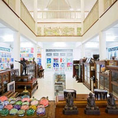
Million Toy Museum
3 uur
50
10 AM - 8 PM
Historie
Een museum waar jij je favoriete speeltje van vroeger misschien wel tegenkomt. Er is niet alleen speelgoed te vinden, maar ook oude Buddhistische amuletten en antieke Thaise valuta.
-
Tuk Tuk
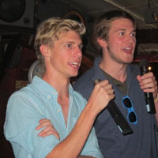
Gahn Glooay
3 uur
va. 120
4 PM - 1 AM
Lokaal eten
Wanneer je wilt genieten van een typisch Thais gerecht en tegelijkertijd wilt luisteren naar de geweldige optredens van Karaoke dan vermaak jij je wel een avond hier.
Th Rotchana
Tuk Tuk
Naar stad selectie
PAI
1 nacht
MIJN ACTIVITEITEN
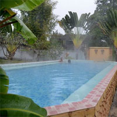
Aroma Pai Spa
3 uur
va. 750
10 AM - 10 PM
Ontspanning
Bied baden en massages aan in privé kamers, heeft een groot zwembad en verschillende spa behandelingen.
110 Moo 2
Tuk Tuk
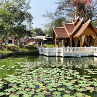
Wat Nam Hoo
2 uur
GEEN
0 AM - 12 PM
Kunst & Cultuur
Een tempel met een buddha waar vroeger heilig water uit zou hebben gestroomd. Hier kun je alles vinden over dat heilig water.
Ban Nam Hoo
Taxi
Thai Style BBQ
3 uur
va. 140
4 PM - 1 AM
Lokaal eten
Geniet van een echte Thaise BBQ, er is keus uit veel verschillende vlees en groente soorten en er is live muziek aanwezig.
Th Khetkelang
Tuk Tuk
Naar stad selectie